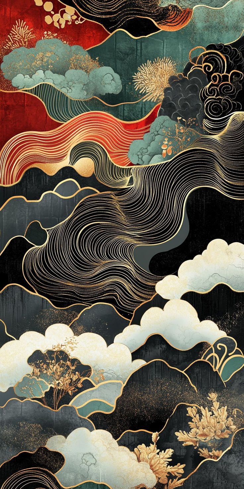
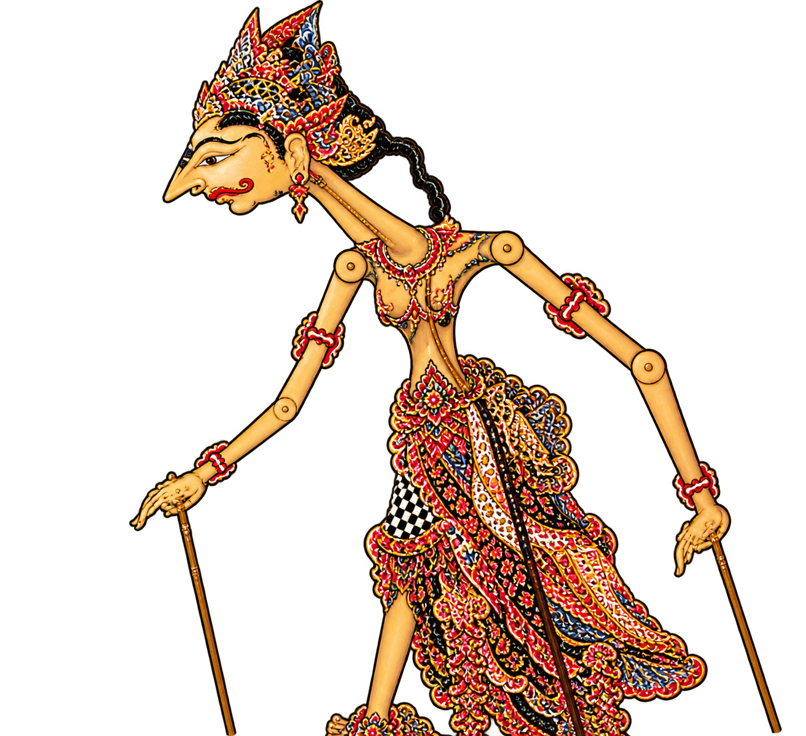

Wayang Golek
Jenis wayang berbentuk boneka tiga dimensi yang terbuat dari kayu, dimainkan oleh dalang untuk menceritakan kisah tertentu dengan pengetukan dan gaya main khas Sunda.
Jawa Barat — Sunda
Boneka tiga dimensi dari kayu

